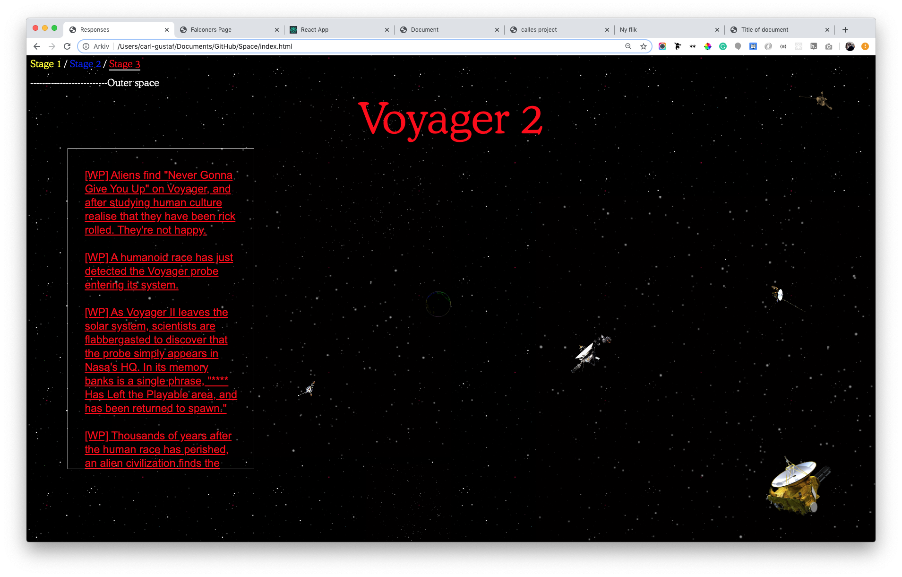

Why does this zine come in the form of a quite default styled web page?
I read the essay "Basic HTML Is the New Punk Folk
Explosion", by Zack Mandeville, and thought that it would be a good format for me.
I have two favorite quotes from this essay:
-
"if you want to tell people about your favorite bands and
find other music fans, then you might make a zine. And in the act of
making zines, you were led to learn about traditional printing, type
design, layout techniques, and more. Learning about older skills gave
you tools for your modern passion."
-
"I think we are drawn to the aesthetics of the early web because it
feels authentic and human, like a chair made by hand or a band playing
only for the love of it."
I like the way Zach is describing the early web to be uncomplicated, and
how its simple structure is inviting people to be part of creating it.
I'm hoping to bring some of this notion into my own projects.
What do I bring from my compendium?
When looking back at my Thesis Compendium I would say that most things are still relevant. One of the assignments was to make a list of terms that are important to us, and that is necessary to understand our work. I'm still using most of the words, but I've chosen a few that have been extra important:
-
Non-linearity
This semester I've gained an interest in alternative realities. I was introduced to this when looking at Alan Kay and the work he and his colleagues did for Xerox Park. In their projects, they created
user interfaces, and even though they were most active in the early seventies, much of their work has been used as the foundation for the user interfaces we are using today.
This is interesting because Alan Kay is saying that the reality they created in Xerox Park is just one way to do it, not the only way. Since they were so early, very few alternatives were presented, so most people didn't even consider other directions. Xerox Park ran out of funding and couldn't continue their own research. What happens if we step back, and vision other directions our usage of digital products could have taken? What branches would have occurred if Xerox Park would still be up and running, presenting different options for us to choose from?
-
Tangled hierarchy:
This phrase is useful for me because of its two very visual worlds. For me, the visuals in these words are contradicting each other, which is what makes it interesting. Before reading this composition of words, a hierarchy has always been depicted as a pyramid in my brain. But by putting it next to the word "Tangled," an alternative way of visualizing this word has been presented. What other forms can hierarchy take?
-
Footnotes taking over:
In a narrative, more straight forward way, I would say that
footnotes that are taking over are also related to tangled
hierarchy. What is the most important, the actual text, or the
little detail text at the bottom of the page that all of a sudden
unlocks the rest of the text, giving it a whole new meaning? What is
the hierarchy in that? And what can be unfolded from these little
footnotes?
-
Ikea hacking:
Zach Mandeville describes the simple structure of the early web to
invite users to participate. I think that Ikea furniture shares that
simple structure but in a physical way. It is interesting to think
of what about Ikea furniture is making people want to hack it, and I
think there are many reasons, but I think three reasons are more
important than others:
1. They are cheap and accessible. If you screw it up, you can always
get a new one.
2. The users understand how simple the structure is because the
furniture is not mounted when it's purchased.
3. So many people on the same furniture so there is a will to
express yourself differently in your design.
I think all these three things can easily be applied to
digital products.
Selected projects that are still relevant:
-
Panarama Poster

I made a poster where I provided some input but couldn't control the
output.
-
So strange loops

I made a website that tries to use the physicality of the browser to
explain the complexity of Strange Loops.
-
"Can you shoot me an alphabet"
I joined some browser based games and tried to convince other
players to create graphic form with me.
-
This should be a park
I made a website where I provide some tools for people to hack
architecture renderings.
-
Sketchup Explorations
I used sketchup to make music videos.
-
Falconers type specimen
I made a website where the user can type with a typeface that reveals
the sound of the letter with its angle.
-
Space stories

I made a website where I present the background to the space probes we have sent out of our solar system. Then the user is directed to write some fiction about
these space probes on Reddit.
-
An essay dinner party
I hosted a dinner party for some different writings to explore what
they would say to each other.
-
My text tetris

I made a text editor that encourages non-linear writing.
Structuring my thesis book
I'm currently working on an essay that is dealing with margins, and the creative freedom of the user, viewer, participant, or whatever you choose to call the person interacting with my design. I think that this essay will be presented as an early text in my thesis. Since I yet haven't fully understood what parts need to be included in the thesis, it is not impossible that I ill shizzle this essay into an abstract, a letter to the reader, or something like that.
Anyway. The idea came up when I was playing around with my text editor. When feeding it a text about non-linear narratives, the text generator GPT-2 served me the phrase "Narrative Dead Space." I loved it. It made me think of what the dead space can be when it is appropriate and when it is not. So far, this is the outline for my essay:
Dead space in books
Dead space might have a negative tone to it. But for me, it really doesn't. I think of it as white margins in a book. And what do white margins do for us? For me, it has several purposes. It gives us some rest and makes the overall intake of information less dense. But it also allows us to take notes, highlight what's important and create small analog hyperlinks to items in our own brain. It gives us some freedom and lets us fill it up with details that makes this text unique to ourselves.
So what is dead space in a story?
Look at a story, where the plot is more or less filled out. What if the story at some points Is completely filled, and leaves no room for interpretation. And what if it at some point is very open-ended? If this was in a written text, it might be a page with only one word. But what does these open ends look like in other formats?
Consequences of dead space in a story?
I think that working with these margins is a beautiful act of balance. If there is too much dead space, you might lose a lot of readers. And that might be ok. This story might not be intended for them. And if it is too filled out, you're, as we would say in Swedish: "Writing the viewer on the nose," meaning that you're explaining too much, taking the joy out of the experience.
Another nice thing about having some dead space is that the story might branch. Before entering the next stage, the participant might already have taken a different road. Maybe that road is more interesting than the one the writer is suggesting? Great, let them go ahead, create something new, something exciting that we had never thought of. Can my thesis book encourage these exciting branches?
Margins as instruction on how to read
Maybe the size of the margins can tell the reader how open ended, or how specific I want to be in the that particular part. Maybe if there is a lot of margins, I want them to spin off, go into a rabbit hole. If there isn't a lot of margins, I might want their full attention.
Sometimes I might want the full focus from my reader. I might want them not to zoom out. I think this Dead Space has to have its highs and lows. Sometimes there might be a lot of it. Sometimes there might be none of it.
In my thesis, I'm planning on working with a dynamic dead space. I want the reader to look at this as a subtile hint on when to zoom out into their own mind, and when to focus on what I want to communicate.
Dec 7th
I ended my December 7 presentation by presenting my concern for my form
exploration. I feel I have found questions that I'm passionate about
researching, and I think it is easy to use them as a framework for
structuring new projects. Still, so far, they have been very focused on
narrative aspects, and I haven't been investigating form in these
projects.
Next semester I'm aiming to see how the same approach I have had when
generating narratives can be used to generate form.
I often tend to fall back to a default design style, and I don't think
there is anything wrong with that. I want to make sure that, before I
leave RISD, I'm comfortable using form to express my voice.
The feedback I received
My concerns about how and when to use form was a start out point for the discussion after my feedback. I appreciate the focus we had and how we discussed how form is worth investigating in relation to my interests. But not only going forward, some of my old projects could be worth visiting again but from a form perspective. Some of the points we were talking about was:
- Who are the tools for? Are they for myself, or are they meant to be used by someone else?
- If they are to be used by someone else, is there a way of making a less complex version that is easier for someone to approach?
- You have designed and developed a kitchen - now start cooking in it.
- Can you continue to blur the line between consumer and creator?
Are there better or worse ways to use this? What is the best application for this?
- How can you break/hack your own tools?
- Can you make your thesis book with your writing tool?
My plan forward
Over wintersession I'm teaching fundamentals of web design. Alan Kay is saying that the current form of the web is only one direction out of many possible. Having that in mind, I think it will be interesting to interact with a group of students that are new to programming. What is their view of what the web could be? How is their view different from someone who has technical restrictions in their minds?
I'm glad I get the chance to teach. I would like to have connections to academia, no matter if it is in Europe or in the US. I believe it will keep me updated on what is going on in the field. I think it would be a good way to surround myself with work that isn't client-driven.
Teaching web design will also be a good practice since I'm quite new to the topic myself. I have to spend a lot of time in the last year and a half trying to pick up programming, and I would love to share some of the methods and ways of learning that have worked for me.
In terms of my own work, I would like to refine the writing tool to such a stage that not only me but also others can use it. I want to use it as a tool for myself when writing my own thesis. I want this to be done before the spring semester begins.
GPT-2 Archeology
Before the spring semester begins, I would like to refine the writing tool to such a stage that not only me but also others can use it. I want to use it as a tool for myself when writing my own thesis.
I then want to use the writing tool for a project that I have given the working title "GPT-2 Archeology". The idea is to choose a few objects that we know nothing or very little about but still fascinates us. I would use the information I can find about them to start writing about them together with GPT-2. But this project also has a formal aspect of it. I need to do some visuals for the objects. Maybe I need to visualize the environment where the object was used or the person who owned it. I will use GPT-2 to write descriptions that I later will send to individual artists and freelancing designers for visualization through Fiverr.
I like the thought of creating new content together with the machine and other humans. The idea is to make an archeological archive, both as a physical book and a website about all the objects with descriptions and visualizations.